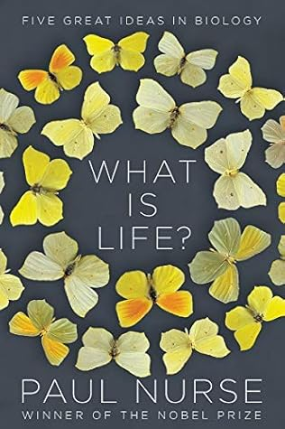

What Is Life?: Five Great Ideas in Biology
Reseña por Jorge I. Zuluaga

Ver reseña en GoodReads (necesita cuenta)
Encontré "What is life?" por casualidad mientras navegaba en el canal de televisión más grande de la historia: YouTube. Sí, así como lo leen. No me llegó a través de recomendaciones en Goodreads, ni fue por alguien conocido o porque lo vi citado en otro libro. Es de esas coincidencias afortunadas que, de coincidencia, no tienen realmente nada: YouTube (o Google) seguramente escuchó conversaciones en las que mencionaba que estaba haciendo un curso de astrobiología y terminó recomendándomelo.
Como sea, acertó.
Hace unos años había leído el que es considerado el pionero indiscutible de los textos que abordan, con desparpajo y desde el título, una de las preguntas más difíciles que ha formulado la ciencia: ¿qué es la vida? Me refiero, por supuesto, al libro de Erwin Schrödinger, homónimo de este libro, "¿Qué es la vida?". En aquel documento pionero, Schrödinger logra identificar los elementos fundamentales que hacen a la materia viva distinta de otras formas complejas de materia. Lo más increíble es que lo hizo en una época en la que no había ocurrido la revolución molecular de la biología, que sucedió al descubrimiento, por Rosalind Franklin, Francis Crick y James Watson, de la estructura del ADN y el desciframiento del código de la vida que realizaron estos dos últimos.
En "What is life?", el profesor Paul Nurse, Premio Nobel de Medicina y Fisiología, vuelve sobre la pregunta fundamental, pero con el beneficio de casi siete décadas de descubrimientos científicos, incluyendo los suyos propios (Nurse recibió el Nobel en 2001 por sus aportes en el esclarecimiento de los mecanismos químicos que controlan la división celular).
Como menciona el subtítulo del libro, su versión de la respuesta a la pregunta de qué es la vida se desarrolla en cinco actos, en los que presenta las que llama las ideas más importantes de la biología: la célula, el gen, la evolución, la vida como química y la vida como información.
El resultado es un fabuloso viaje, en no más de 200 páginas, por las ideas fundamentales de la biología, en un lenguaje sencillo y ameno que no sacrifica, sin embargo, un ápice de rigor científico. Las explicaciones contienen también, aquí y allá, algunas anécdotas interesantes y comentarios sobre las personas que hicieron algunos de los descubrimientos centrales de la biología y que el autor tuvo el placer de conocer. Estas historias le dan al libro un carácter de narración muy humana y lo convierten en una lectura aún más agradable.
¿Logra responder Nurse a la pregunta que formula en el título de su libro? No. Nadie lo ha hecho todavía. Es decir, mientras no exista, como decía alguien, una teoría general de la vida —una que aplique a cualquier lugar del universo, como las que tenemos, por ejemplo, sobre las partículas que lo constituyen—, no podremos dar una respuesta a la pregunta.
Aun así, Nurse logra reducir al mínimo número de ideas posibles los elementos esenciales de la vida y hablar de esos elementos de forma que cualquiera con un conocimiento básico de las ciencias pueda entender. Eso ya es mucha cosa.
Creo que allí radica justamente la idea de definir una cosa o un proceso que conoces ampliamente. El ejercicio es el de eliminar detalles hasta que, si eliminas uno más, ya no puedes reconocer el fenómeno del que estás hablando. ¡Eso es este libro!
Para mí, este libro se convierte automáticamente en la mejor referencia para entregar a mis estudiantes, para que conozcan de un vistazo los elementos básicos de la vida, sin pasar por los innecesarios detalles que los libros de biología nos ofrecen.